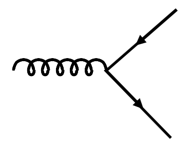
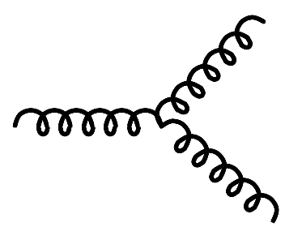
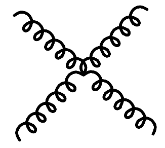
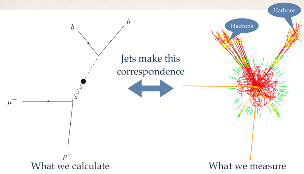
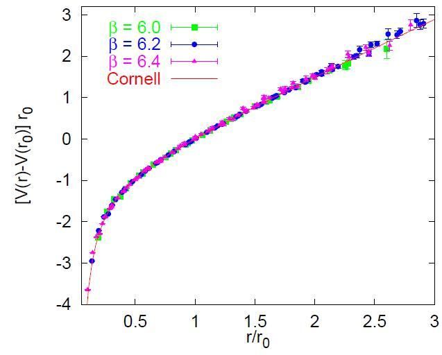
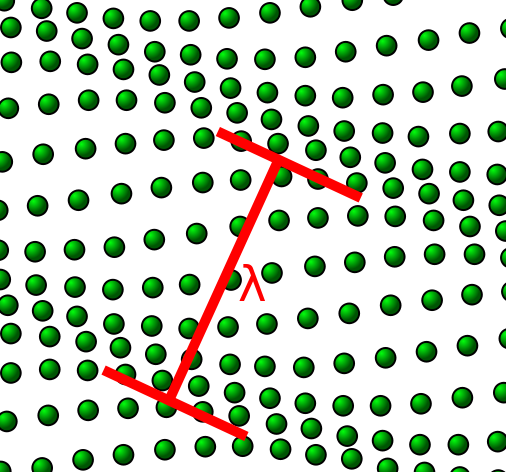

Group theory used in this course
Quantum Chromodynamics (QCD)
QCD Lagrangian
Exercise 1: Do you understand why there are 8 generators of SU(3)?
Exercise 2: Write down your version of SU(3) generators!
Exercise 3: What are the couplings between quarks and gluons?
Running coupling constant and asymptotic freedom
Confinement
Isospin symmetry
Exercise 4: Find examples of hadron states that belong to isospin multiplets
Spontaneous breaking of chiral symmetry
Spontaneous symmetry breaking
Why does SSB exist?
Exercise:
Inequivalent Hilbert spaces
Low-energy excitations in presence of SSB: Nambu-Goldstone bosons
Construction of Lagrangians in the presence of SSB
Spontaneous breaking of chiral symmetry
We focus on continuous groups, i.e. group elements depend on a number of continuous parameters. We will take the group SO(3) of rotations \( R \) in three dimensions as an example. Parameters are angles of rotation, e.g. Euler angles, and we have for instance \( R(\alpha,\beta,\gamma) \) in SO(3). A group consists of elements (think "symmetry operations") that are closed under multiplication (i.e. multiplying two group elements yields a third), and each have an inverse.
Consider a rotation of the vector \( \vec{r}=(x,y,z) \) around the axis \( \delta\vec{\alpha}=(\delta\alpha_x,\delta\alpha_y,\delta\alpha_z) \), where \( \delta\alpha_{x,y,z}\ll 1 \) are small angles. Under the rotation \( \vec{r}\to\vec{r}+\delta\vec{r} \) with $$ \begin{align} \delta\vec{r}&=\delta\vec{\alpha}\times\vec{r} \nonumber\\ &=\left(\begin{array}{ccc} 0 & -\delta\alpha_z & \delta\alpha_y\\ \delta\alpha_z & 0 & -\delta\alpha_x\\ -\delta\alpha_y & \delta\alpha_x & 0 \end{array}\right) \left(\begin{array}{c} x\\ y\\ z \end{array}\right) . \label{_auto1} \end{align}$$ Writing \( \delta\vec{r} = -i\delta\alpha_x L_x \vec{r}-i\delta\alpha_y L_y \vec{r}-i\delta\alpha_z L_z \vec{r} \) yields matrix expressions for \( L_{x,y,z} \), the generators of rotations around the corresponding axes.
For the cases of our interest, each group element can be written as an exponentiation of generators \( L_j \), i.e. $$ \begin{align} R(\alpha_x, \alpha_y, \alpha_z) = e^{-i\left(\alpha_x L_x + \alpha_y L_y + \alpha_z L_z\right)} . \label{expon} \end{align} $$ This generates orthogonal 3x3 matrices. The picture is as follows. The vector \( (\alpha_x,\alpha_y,\alpha_z) \) is in the direction of the axis of rotation, and the angle of rotation is its magnitude \( (\alpha_x^2+\alpha_y^2+\alpha_z^2)^{1/2} \).
As an example, let us consider rotations around the \( z \) axis by an angle \( \alpha \). The corresponding rotation matrix in three-dimensonal space is well known to you: $$ \begin{align} R_z(\alpha) = \left(\begin{array}{ccc} \cos\alpha & -\sin\alpha & 0\\ \sin\alpha & \cos\alpha & 0\\ 0 & 0 & 1 \end{array}\right) . \label{_auto2} \end{align}$$
The matrix of \( L_z \) is $$ L_z=\begin{align} \left(\begin{array}{ccc} 0 & -i & 0\\ i & 0 & 0\\ 0 & 0 & 0 \end{array}\right) , \label{_auto3} \end{align}$$ and we have indeed \( R_z(\alpha) = \exp{(-i\alpha L_z)} \). In Mathematica, for instance, the function MatrixExp can be used to verify this.
If the exponentiation of generators is a novel concept to you, consider rotations around the \( z \) axis from the following perspective. Consider a functin \( f(r,\phi) \) in the \( xy \) plane. Here we used \( x=r\cos\phi \) and \( y=r\sin\phi \). A rotation of \( f \) by an angle \( \alpha \) yields \( f(r,\phi-\alpha) \), and the operator that accomplishes this is $$ \begin{align} f(r,\phi-\alpha) &= \sum_{n=0}^\infty {(-\alpha\partial_\phi)^n f\over n!}\bigg\vert_{r,\phi}\nonumber\\ &= \sum_{n=0}^\infty {\left(-i\alpha L_z\right)^n f\over n!}\bigg\vert_{r,\phi}\nonumber\\ &=e^{-i\alpha L_z} f(r,\phi) , \label{_auto4} \end{align} $$ and \( L_z = -i\partial_\phi \) is the generator. We note that we cannot simply take \( \partial_\phi \) as a generator, because that operator is not Hermitian. (To see this, apply it to functions \( e^{im\phi} \) and compute matrix elements.)
The generators fulfill commutation relations that define the group, and we have in general $$ \begin{align} [L_k, L_l] = i \sum_m f_{klm}L_m . \label{_auto5} \end{align} $$ Here, \( f_{klm} \) are the group's structure constants, and we have of course \( f_{klm}=\varepsilon_{klm} \) for SO(3).
Physicists are interested in finite-dimensional matrix representations of the group's generators. In the case of SO(3), let us use \( L_{\pm} = L_x\pm iL_y \), and matrix elements are $$ \begin{align} \langle l m'\vert L_\pm \vert l m\rangle &= \sqrt{l(l+1)-m(m\pm 1)} \vert l m\pm1\rangle , \label{_auto6}\\ \langle l m'\vert L_z \vert l m\rangle &= m\vert l m\rangle . \label{_auto7} \end{align} $$ Thus, for the rotation group SO(3) we know all \( (2l+1) \) dimensional matrix representations of the generators, and the exponentiation \eqref{expon} would give us rotation matrices.
Let us turn to SU(2). This is the special unitary group in two dimensions, i.e. it transforms two-dimensional vectors in a complex Hilbert space. This is the group of unitary matrices in two dimensions, i.e. the group of unitary 2x2 matrices. How many parameters (i.e. how many generators) does this group have? Traceless, complex Hermitian 2x2 matrices have three parameters (two for the complex off-diagonal matrix element plus two real diagonal marix element minus one condition that the sum of diagonal elements vanishes). Thus, there are three generators for SU(2), and we can take Pauli matrices as examples. In the case of isospin, for instance, we denote the vector of Pauli matrices as \( \vec{\tau}=(\tau_x,\tau_y,\tau_z) \), and a rotation in isospin space by "angles" \( \vec{\alpha}=(\alpha_x,\alpha_y,\alpha_z) \) is generated by the operator \( \exp{(-i\vec{\alpha}\cdot\vec{\tau})} \).
Finally, we turn to SU(3), the special unitary group in three dimensions. SU(3) transforms three-dimensional vectors in a complex Hilbert space. This is the group of unitary matrices in three dimensions, i.e. the group of unitary 3x3 matrices. How many parameters (i.e. how many generators) does this group have? Traceless, complex Hermitian 3x3 matrices have eight parameters (two for the each of the three complex off-diagonal matrix element plus three real diagonal marix element minus one condition that the sum of diagonal elements vanishes). Thus, there are eight generators for SU(3), and one usually takes the Gell-Mann matrices as examples.
The bird's eye view: Continous groups are defined by the commutation relation of their generators. Generators are linear operators, and the exponentiation of generators induces the symmetry operations.
Quantum Chromodynamics (QCD) is the theory of the strong nuclear interaction. Here we briefly discuss aspects of QCD that are essential for this course.
QCD describes the interactions between quarks and gluons. The Lagrangian density is $$ \begin{align} \label{QCDLag} {\cal L}(x) = \sum_{f=u,d,s,c,b,t} \sum_{c c'=r,g,b}\overline{\psi}_{fc}(x) \left(iD_{cc'} - m_f\delta_{c c'}\right) \psi_{fc'}(x) -{1\over 4} \sum_{a=1}^8 F_{\mu\nu}^a(x) F^{a~\mu\nu}(x) \end{align} $$
Here, the sums are over flavors \( f \), colors \( c,c' \), and gluons \( a \). The quark spinor fields are denoted as \( \psi_{fc}(x) \), the covariant derivative $$ \begin{align} \left[iD\right]_{cc'} =i\delta_{cc'}\gamma^\mu\partial_\mu +{g}\sum_{a=1}^8 A_\mu(x)^a{\lambda^a_{cc'}\over 2} \label{_auto8} \end{align} $$
couples quarks and gluons, and the field strength tensor is $$ \begin{align} F_{\mu\nu}^a(x) \equiv \partial_\mu A_\nu(x) -\partial_\nu A_\mu(x) -g \sum_{b,c=1}^8f^{abc}A_\mu^b(x) A_\nu^c(x) . \label{_auto9} \end{align} $$
The strong coupling is denoted as \( g \). The Gell-Mann matrices \( \lambda^a \), \( a=1,\ldots, 8 \), are the generators of SU(3), i.e. traceless Hermitian \( 3\times 3 \) matrices. They play the same role for SU(3) at the the Pauli matrices do for SU(2), and \( f^{abc} \) are the gauge group's structure constants, i.e. $$ \begin{align} \left[\lambda^a,\lambda^b\right] = i f^{abc}\lambda^c . \label{_auto10} \end{align} $$
Hint. Take SU(2) and its Pauli matrices as an example and generalize to SU(3)
Answer. Complex Hermitian \( 3\times 3 \) matrices can be built from 9 matrices: Three matrices with real elements on the diagonal, three with real elements on the off-diagonal, and three with purely imaginary elements on the off-diagonal. Generators are traceless, i.e. we have to remove one of the diagonal matrices. This makes a total of 8 matrices.
Hint. Take SU(2) and its Pauli matrices as an example and generalize to SU(3), i.e. Pauli matrices are traceless, complex Hermitian \( 2\times 2 \) matrices and Gell-Mann matrices are traceless, complex Hermitian \( 3\times 3 \) matrices
QCD is the gauge theory of SU(3) color. The Lagrangian \eqref{QCDLag} is invariant under the simultaneous gauge transformations $$ \begin{align} \psi_{fc} &\to \sum_{c'} \left[e^{ig\sum_{s=1}^8\omega^a(x)\lambda^a}\right]_{cc'}\psi_{fc'} , \label{_auto11}\\ A_\mu^a(x) &\to A_\mu^a(x) + \partial_\mu \omega^a(x) - g\sum_{bc}f^{abc}\omega^b(x)A_\mu^c(x) \label{_auto12} \end{align} $$
of quark and gluon fields
Hint. Look at the Lagrangian \eqref{QCDLag} and extract all couplings betweem quarks and gluons, and between gluons. In general, interaction terms are those that are not purely quadratic in the fields.
Answer.
Figure 1: The quark-gluon vertex \( g \overline{\psi}_{f} A_\mu^a{\lambda^a\over 2} \psi_f \).

Figure 2: The three-gluon vertex.

Figure 3: The four-gluon vertex.

Input to the QCD Lagrangian are quark masses, and the SU(3) gauge coupling \( g \). The masses are approximately as follows.
| flavor | charge | mass |
|---|---|---|
| \( u \) (up) | +2/3 | 2-3 MeV |
| \( d \) (down) | -1/3 | 4-6 MeV |
| \( c \) (charm) | +2/3 | 1.3 GeV |
| \( s \) (strange) | -1/3 | 100 MeV |
| \( t \) (top) | +2/3 | 170 GeV |
| \( b \) (bottom) | -1/3 | 4.5 GeV |
We clearly have two light quarks (possibly three if one counts the \( s \) quark), while the others are heavy. Defining the mass is subtle because of confinement.
In analogy to quantum electrodynamics (QED), where \( \alpha_{qed} \equiv e^2/(4\pi) \), we define the strong coupling as \( \alpha_s\equiv g^2/(4\pi) \). We want to discuss the (resolution) scale dependence of these coupling constants.
In electromagnetism, a dielectric medium alters the force between two charges from $$ \begin{equation} F = {q_1 q_2\over 4\pi r^2} \to {q_1 q_2\over 4\pi \varepsilon r^2} , \label{_auto13} \end{equation} $$ with \( \varepsilon>1 \) because of screening.
The QED vacuum is like a polarizable medium because of quantum fluctuations. For very short times, electron-positron pairs can be created as vacuum fluctuations, and such \( e^+ e^- \) pairs also induce some sort of screening. This makes the QED coupling constant depending on the distance (or via Fourier transform) on the momentum scale, and we deal with running coupling constants. In QED, the running of the coupling strength as the momentum scale \( \mu \) is varied is determined by a renormalization group (RG) equation $$ \begin{equation} \label{RGqed} \mu {d \over d\mu}\alpha_{qed}(\mu) = \beta_{qed}(\mu) . \end{equation} $$ Here, \( \beta_{qed}(\mu) = 2\alpha_{qed}^2/(3\pi) > 0 \) is the "beta function," and the solution of the RG equation \eqref{RGqed} yields $$ \begin{equation} {1\over\alpha_{qed}(\mu)} = {1\over\alpha_{qed}(\mu_0)} -{1\over 3\pi}\log{\mu^2\over\mu_0^2} . \label{_auto14} \end{equation} $$ In QED, \( \alpha_{qed}(\mu=0) \approx {1\over 137} \), while \( \alpha_{qed}(\mu=M_Z) \approx {1\over 128} \) at the mass of the \( Z_0 \) boson \( (M_Z\approx 91 \) GeV). Thus, in QED, the coupling strength increases with increasing momentum scale.
QCD is different. The RG equation for the strong coupling depends on the beta function $$ \begin{equation} \beta_{qcd}(\alpha_s) = -{11-{2\over 3} n_f\over 2\pi}\alpha_s^2 +\cdots . \label{_auto15} \end{equation} $$
Here, \( n_f \) denotes the number of "active" flavors. This contribution to the beta function stems from quarks and enters with a positive sign. However, gluon self-interactions yield a negative contribution, and the beta function is negative overall. As a consequence $$ \begin{equation} {1\over\alpha_{s}(\mu)} = {33-2n_f\over 6\pi} \log{\mu\over \Lambda_{qcd}} , \label{_auto16} \end{equation} $$ where \( \Lambda_{qcd}\approx 250 \) MeV replaces the integration constant \( \alpha_s(\mu_0) \). For momenta \( \mu\gg \Lambda_{qcd} \), \( \alpha_s \ll 1 \), and the strong coupling vanishes in the limit of infinite momentum transfer. This is asymptotic freedom, and QCD becomes perturbative in this regime.
On the other hand, for momenta \( \mu\lesssim \Lambda_{qcd} \), the strong coupling constant becomes large, and QCD becomes a non-perturbative theory that (so far) can only be solved numerically within lattice QCD.
No individual quarks have ever been observed. Jets, measured in high-energy collisions of strongly interacting particles, however, can be calculated in QCD as originating from individual quarks or gluons (because the momentum transfers are large), yet the final experimental signature are hadrons, i.e. color neutral objects with confined quarks. Figure 4 shows a simulation of a collision that results (among other things) in a \( \mu^+ \mu^- \) pair and a \( b \overline{b} \) quark-antiquark pair that hardonizes as it leaves the region where it was created in the collision.
Figure 4: Jet. Simulated event from ATLAS Experiment © 2011 CERN.

Confinement is not really understood. In a potential model, QCD at large momentum transfers (i.e. at short distances) is based on single-gluon exchange between quarks. As single photon exchange in QED yields the Coulomb potential, QCD gives a \( \alpha_s/r \) potential at short distances. At large distances, however, the potential increases linearly with increasing distance, see Fig. 5. Thus two quarks can never be separated. Instead, as one starts to separate two quarks, the ever increasing energy needed to do this creates an increasing number of quark-antiquark pairs.
Figure 5: \( q\overline{q} \) potential [Gunnar Bali, Phys.Rept. 343, 1-136 (2001)].

The lightest two quarks have very similar masses, and the mass difference is small compared to \( \Lambda_{qcd} \). In the constituent quark model, neutrons \( (n) \) and protons \( (p) \) are states \( \vert n\rangle = \vert udd\rangle \) and \( \vert p\rangle = \vert uud\rangle \), respectively, and they also have very similar masses (939.5 and 938.3 MeV, respectively). This led Heisenberg to introduce isospin symmetry for the proton and neutron, viewing both particles as two states of the nucleon, i.e. being isospin \( T=1/2 \) states with isospin projections \( T_z=\pm 1/2 \), respectively. Thus, \( \vert n\rangle = \vert T=1/2,T_z=1/2\rangle \), and \( \vert p\rangle = \vert T=1/2,T_z=-1/2\rangle \), and the strong nuclear force was viewed as being approximately invariant under SU(2) isospin symmetry, i.e. one can rotate the proton and neutron states in isospin space. Later, this (approximate) symmetry of the strong force was also seen in other hadrons. Note that particle physicists often use \( I \) and \( I_3 \) instead of \( T \) and \( T_3 \) to refer to isospin and its projection.
Answer.
Under Lorentz transformations, two-component spinors either transform as the left-handed \( (L) \) or the right-handed \( (R) \) representation of the Lorentz group, and we call them left- and right-handed spinors, respectively. In other words: The Lorentz group has two two-dimensional representations, one called left-handed and the other called right-handed. Lagrangians are Lorentz scalars and employ bilinear forms of spinors. It turns out that one needs four-component spinors, i.e. spinors consisting of a two-component left-handed and a two-component right-handed spinor.
Chirality can be understood without refering to the representations of symmetry groups only for massless fermions, because it is then similar to helicity. Helicity is the projection of a particle's spin onto its momentum. Massless particles have the same helicity in any frame of reference, and for such particles a projection onto states with left-handed (right-handed) helicity also projects onto states with left-handed (right-handed) chirality.
The lightest quarks, i.e. the \( u \) and \( d \) flavors, are approximately massless, and in the limit of vanishing masses for these quarks, the QCD Lagrangian exhibits a \( SU(2)_L \times SU(2)_R \) chiral symmetry, i.e. it is invariant under independent SU(2) rotations between the left-handed doublet \( (u_L,d_L) \) and SU(2) rotations of the and right-handed doublet \( (u_R,d_R) \), respectively. In practice, the \( SU(2)_L \times SU(2)_R \) chiral symmetry implies that hadrons with identical spin but opposite parities have equal masses, i.e. hadrons come in parity doublets. As the \( u \) and \( d \) quarks have small masses (and are also slightly different in mass), we expect that this degeneracy of parity doublets is only approximately realized in nature.
Let us see, to what extent this symmetry is realized in nature. The nucleon is the lightest \( J^\pi={1\over 2}^+ \) state, but the nearest \( J^\pi={1\over 2}^- \) state is 600 MeV higher in energy. Clearly, the \( SU(2)_L \times SU(2)_R \) chiral symmetry is not realized in nature, at least not at low energies.
How to solve this puzzle? The spontaneous breaking of chiral symmetry addresses this question. We will digress into spontaneous symmetry breaking in general and then come back to the spontaneous breaking of chiral symmetry.
The laws of nature are invariant under rotations. How can deformed object exist (after ground states with angular momentum \( l=0 \) are spherically symmetric)? The laws of nature are invariant under translations. How can it be that objects are localized in space (after all, plane waves have a uniform probability density in space)? The key to answer these (and related) questions is spontaneous symmetry breaking (SSB).
Let us consider the rotations of a rigid body (with moment of inertia \( \Theta \)). The energy spectrum is $$ \begin{equation} E = {\hbar^2 L(L+1)\over 2\Theta} \label{_auto17} \end{equation} $$
for angular momentum \( L \).
Let us consider the case of the rotor in the presence of a small perturbation \( \varepsilon \) that breaks rotational invariance. It is interesting to consider the limits $$ \begin{align} \lim_{N\to\infty}\lim_{\varepsilon\to 0} & \label{_auto18}\\ \quad\mbox{and} & \nonumber\\ \lim_{\varepsilon\to 0}\lim_{N\to\infty} & \label{_auto19} \end{align} $$
separately. In the first case, the perturbation acts on a finite rotor. As long as \( \varepsilon \) is larger than the level spacing, the ground state will be deformed, i.e. a superposition of states with different \( L \) quantum numbers. Once \( \varepsilon \) is much smaller than the level spacing, the ground state is spherically symmetric, and it will remain spherically symmetric as the particle number is increased. In the second case, the ground state will be deformed for arbitrarily small perturbations \( \varepsilon \), because the level spacing becomes zero as \( N\to\infty \), and removing the perturbation will leave us with a deformed ground state. For a macroscopic object \( \Theta\to\infty \), and states with different angular momentum become degenerate.
We see that the order of taking the limits is important. (Do you know other examples in physics where this is the case?) Similar though experiments can be performed for the center-of-mass motion of an object with mass \( M \), as the kinetic energy \( p^2/(2M) \) tends to zero for \( M\to\infty \), i.e. for infinite particle number, and superpositions of different plane wave states can make a localized center-of-mass wave function.
Thus, SSB happens in a macroscopic system \( (N\to\infty \) is strictly required) when an arbitrarily small symmetry breaking perturbation leads to a ground states with lower symmetry than the Hamiltonian.
Let us consider a simple model for a solid in one dimension. This is a crystal with lattice spacing \( a \). Let \( \psi(x) \) describe the wave function of a single ion. We assume that \( \psi(x) \) and \( \psi(x-a) \) are orthogonal to each other. Take an ion in a box of size \( a \), or a DVR basis as examples. The ground-state for \( 2N+1 \) ions is thus $$ \begin{equation} \label{gs} \Psi(x_{-N}, x_{-N+1},\ldots,x_N) = \prod_{j=-N}^{N} \psi(x_j-ja) . \end{equation} $$
Of course, the wave function needs to be symmetrized or anti-symmetrized, depending on the spin of the ions, but this is not an essential point here. Let us consider a translation of the crystal by \( \eta \). The operator that accomplishes this is $$ \begin{equation} \hat{U}(\eta) = e^{-i\eta \hat{P}} \label{_auto20} \end{equation} $$ with the total momentum $$ \begin{equation} \hat{P} = \sum_{j=-N}^N -i{\partial\over\partial x_j} \label{_auto21} \end{equation} $$
as the generator. We get the translated wave function $$ \begin{equation} \hat{U}(\eta) \Psi(x_{-N}, x_{-N+1},\ldots,x_N) = \Psi(x_{-N}-\eta, x_{-N+1}-\eta,\ldots,x_N-\eta) \label{_auto22} \end{equation} $$
as the result.
We note that the energy of the translated wave function is the same as the energy of the original wave function. We also note that the translated wave function is orthogonal to the original wave function: The overlap of the translated wave function with the original wave function \eqref{gs} is $$ \begin{align} \langle \Psi|\hat{U}(\eta)|\Psi\rangle &= \prod_{j=-N}^N \int\limits_{-\infty}^\infty{\rm d}x_j \psi^*(x_j) \psi(x_j-\eta) \nonumber\\ &= \left(\int\limits_{-\infty}^\infty {\rm d}x \psi^*(x) \psi(x-\eta)\right)^{2N+1} \nonumber \\ &= |I|^{2N+1}, \label{overlap} \end{align} $$
where \( I \) with \( |I| < 1 \) is the value of the integral between the translated and original wave function \( \psi \). For \( N\to\infty \), the overlap \eqref{overlap} between the translated and original crystal thus vanishes for any arbitrarily small displacement \( \eta \). Does this mean that the ground state has infinite degeneracy? This problem can only be avoided by the insight that the Hilbert spaces of two crystals with different positions of the center of mass are unitarily inequivalent, i.e. one has a different Hilbert space for each position of the center of mass. As a translation yields a state outside the Hilbert space, it is not an allowed dynamical excitation of the ground state.
Again, we see that this can only happen in an infinite system. In a finte system, ground states that differ by a (small) symmetry operation have a finite overlap and cannot be orthogonal to each other. Thus, they reside in the same Hilbert space. Superpositions of such states (that individally break the symmetry) then yield an eigenstate of the symmetry operation and thus exhibit the correct symmetry. Projection techniques yield such states, and (up to a normalization) as $$ \begin{equation} \int {\rm d}\eta \hat{U}(\eta)\Psi(x_{-N},\ldots,x_N) \label{_auto23} \end{equation} $$ indeed gives a state that is invariant under symmetry transformation \( \hat{U} \) when the integral is over the group parameters (i.e. over all displacements for translational invariance or over all rotations angles for rotational invariance, respectively). We thus saw that translations (rotations) are not excitations of systems with SSB of translational (rotational) symmetry. Next we want to understand what are the relevant low-energy excitations for systems exhibiting SSB.
Let us return to the example of an infinite crystal in one dimension and the spontaneous breaking of translational symmetry. The ions are at positions \( x_j=ja \), \( j \) being an integer and \( a \) the lattice spacing. Let us turn to the continuum limit and instead consider an ion at a continous position label \( x \). This yields a field theory, and the continuum limit is useful for the description of physical phenomena with momenta \( k\ll 1/a \). Consider the operation $$ \begin{equation} \label{Utrans} \hat{U}(\eta) = e^{-i \eta(t,x)\hat{P}} , \end{equation} $$ where the momentum operator $$ \begin{equation} \hat{P}=-i{\partial \over\partial x} \label{_auto24} \end{equation} $$ generates translations. Let us understand the action of the operation \eqref{Utrans} on the ground state \( \Psi \). An ion at position \( x \) is displaced by an amount \( \eta(t,x) \) at time \( t \). A snapshot (at fixed time \( t \) and for a two-dimensional crystal, where \( \vec{\eta}(t, \vec{x}) \) is the displacement vector of the ion at position \( \vec{x} \)) is shown in Fig. 6.
Figure 6: Picture of lattice vibrations, i. e. position-dependent displacements of lattic ions (green circles) of a two-dimensional crystal. Also shown (in red) is the wave length \( \lambda \) of the vibration. Note that \( \lambda \gg a \), where \( a \) is the lattice spacing, i.e. the spacing between ions. Credit: Florian Marquard, https://en.wikipedia.org/wiki/Phonon.

We note that this state, characterized by the function \( \eta(t,x) \) has again zero overlap with the ground state, using essentially the same argument as above. Thus, the state \( \hat{U}(\eta(t,x)) \Psi \) is a true excitation of the ground state \( \Psi \).
What is the energy of such an excitation? For long wavelengths \( \lambda \gg a \) (implying small displacements \( |\eta(t,x)|\sim a^2/\lambda \ll a \)) restoring forces will be harmonic, and the energy is thus proportional to the momentum squared, i.e. the square of the inverse wave length, or the squared displacement (again proportional to \( \lambda^{-2} \)). As for an infinite system the wavelength can be arbitrarily large, excitation energies can be arbitrarily small. This implies that excitation energies can be arbitrarily small. The low energy excitations in presence of SSB are (mass less) Nambu-Goldstone (NG) bosons.
We want to construct Lagrangians that describe the low-lying excitations in presence of SSB, i.e. the Lagrangian that governs the dynamics of NG fields. The technique here is {\it effective field theory} (EFT). The construction of EFTs follows a recipe
Here, \( \rho_0 \) is the mass density and \( \mu \) the compression module. They must be determined from data (or computed from a more microscopic theory) and are low-energy coefficients (LECs) in an EFT. Recall that a Lagrangian density \( {\cal L} \) has units length \( ^{-d-1} \) in \( d \) spatial dimensions (because \( \int dt d^dx {\cal L} \) is an action and thus proportional to \( \hbar \), i.e. of dimension length \( ^0 \) (as we use units with \( \hbar=c=1 \) ). Thus, $$ \begin{equation} \rho_0\sim {\Lambda^4\over\omega^2}\quad\mbox{and}\quad \mu\sim {\Lambda^4\over\omega^2} \label{_auto27} \end{equation} $$ yield Lagrangian densities that scale as \( {\cal L}\sim \omega^2 \), i.e. the Lagrangian \( \int dx {\cal L} \sim \omega^{-1}{\cal L} \) is of the low energy scale \( \omega \). If there were no other physics scales, we would be done. The Lagrangian density \eqref{phonon} describes waves (see below), and all restoring forces are harmonic. Corrections to this picture are due to physics at the breakdown scale (rupture of the crystal for large energies \( \Lambda \), or electronic excitations at a scale \( \Lambda_e \) with \( \omega \ll \Lambda_e \). We will not distinguish between the scale where new degrees of freedom enter (i.e. \( \Lambda_e \) ) and the scale \( \Lambda \) where the crystal breaks. At the breakdown scale $$ \begin{align} \partial_x &\sim \partial_x\sim\Lambda , \nonumber \\ \eta&\sim \Lambda^{-1} . \label{_auto28} \end{align} $$
Thus, the leading-order terms contribute $$ \begin{equation} \rho_0(\partial_t\eta)^2 \sim \rho_0 \Lambda^2 \Lambda^{-2} \sim \rho_0 \sim {\Lambda^4\over\omega^2} \label{_auto29} \end{equation} $$ Consider now a correction term \( g \partial^k \eta^l \) with an LEC \( g \), \( k \) derivatives, and \( l \) fields. This term is due to physics at the breakdown scale that can be reached via virtual excitations. At the breakdown scale, this term must be as important as the leading-order terms of the Lagrangian \eqref{phonon}. Thus, $$ \begin{align} g\Lambda^k\Lambda^{-l} \sim \rho_0 \Lambda^2 \Lambda^{-2} =\rho_0 \label{_auto30} \end{align} $$ implying $$ \begin{equation} g\sim \rho_0\Lambda^{l-k} \sim {\Lambda^{4+l-k}\over\omega^2} . \label{_auto31} \end{equation} $$ Thus, at the low-energy scale where the relations \eqref{power} hold, we have $$ \begin{equation} g\partial^k \eta^l \sim g\omega^k \left({\omega\over\Lambda}\right)^l \sim \omega^2\left(\omega\over \Lambda\right)^{k+l-4} , \label{_auto32} \end{equation} $$ and these are indeed corrections to the leading-order terms.
These steps can be employed for any physics situation with a separation of scales \( \omega \ll \Lambda \).
Let us finally solve the Lagrangian density \eqref{phonon}. The Euler-Lagrange equations (\( \partial_t \equiv {\partial\over\partial t} \) and \( \partial_x \equiv {\partial\over\partial x} \)) $$ \begin{equation} {\partial_t} {\partial {\cal L}\over \partial(\partial_t\eta)} +{\partial_x} {\partial {\cal L}\over \partial(\partial_x\eta)} -{\partial {\cal L}\over \partial\eta} = 0 \label{_auto33} \end{equation} $$ for the Lagrangian density \eqref{phonon} yield the equations of motion $$ \begin{equation} \rho_0 \partial_t^2 \eta - \mu\partial_x^2\eta = 0 . \label{_auto34} \end{equation} $$ Solutions are plane waves $$ \begin{equation} \eta(t,x) = \eta_0 e^{i(kx-\omega t)} , \label{_auto35} \end{equation} $$ with $$ \begin{equation} \label{dispersion} \omega = \sqrt{\mu\over\rho_0} |k| . \end{equation} $$ Here \( \sqrt{\mu/\rho_0} \) is the the velocity of sound. Thus, an EFT based on symmetry arguments alone yields the dispersion relation \eqref{dispersion} that governs (acoustic) phonons in solids. We have also devised a way to systematically improve the theory. What is the next-to-leading order correction?
Let us return to QCD. We know that axial vector symmetry \( SU(2)_{L-R} \) is spontaneously broken by the QCD vacuum. Let us compare this case with the crystal discussed above.
| System | 1-d crystal | QCD |
|---|---|---|
| Broken sym. | translation | \( SU(2)_{L-R} \) |
| Broken generator | momentum \( \hat{P} \) | \( SU(2) \) generators: "Pauli matrices" \( \tau_\pm, \tau_0 \) |
| NG fields | phonon \( \eta(t,x) \) | pions \( \pi_\pm(t,\vec{x}), \pi_0(t,\vec{x}) \) |
| NG modes excited by | \( e^{i\eta \hat{P}} \) | \( e^{{i\over F_\pi}\left(\pi_0\tau_0 +\pi_-\tau_++\pi_+\tau_-\right)} \) |
| Order parameter | lattice spacing | chiral condensate \( \langle \overline{q}q\rangle \) |
Note, that \( F_\pi\approx 92.4 \) MeV is the pion decay constant. Thus, pion fields are in units of MeV. The QCD vacuum breaks chiral symmetry, i.e. the expectation value $$ \begin{equation} \langle\overline{q} q\rangle \ne 0 . \label{_auto36} \end{equation} $$ Recall that the quark field \( q=q_L+q_r \), and thus the scalar density $$ \begin{equation} \overline{q} q = \overline{q}_L q_R + \overline{q}_R q_L \label{_auto37} \end{equation} $$ clearly breaks chiral symmetry as it mixes left and right-handed quarks. Calculations reveal that \( \langle\overline{q}q\rangle\approx \) (230 MeV) \( ^3 \).
Let us write $$ \begin{align} \hat{U} \equiv e^{{i\over F_\pi}\left(\pi_0\tau_0 +\pi_-\tau_++\pi_+\tau_-\over f_\pi\right)} = e^{{i\over F_\pi} \left(\begin{array}{cc} \pi_0 & \sqrt{2}\pi_+\\ \sqrt{2}\pi_- & -\pi_0 \end{array} \right)}. \label{_auto38} \end{align}$$ The leading-order term of the pion Lagrangian density is $$ \begin{equation} \label{pions} {\cal L} = {F_\pi^2\over 4} {\rm Tr}\left(\partial_\mu \hat{U} \partial^\mu\hat{U}^\dagger\right) . \end{equation} $$ Why is there only one LEC here compared with two LECs for the phonon Lagrangian density \eqref{phonon}? Check the dimensions of the Lagrangian density \eqref{pions}. Note that the EFT involving pions can now be extended to couple nucleons and pions in a systematic way.
Explicit symmetry breaking: The \( u \) and \( d \) quarks have non-zero masses \( m_u \) and \( m_d \), respectively. Introducing the mass matrix $$ \begin{align} \hat{M}=\left(\begin{array}{cc} m_u & 0\\ 0 & m_d \end{array}\right) \label{_auto39} \end{align}$$ we can add the term proportional to $$ \begin{equation} - {\rm Tr} \left(\hat{M}\hat{U}^\dagger + \hat{U}\hat{M}\right) \label{_auto40} \end{equation} $$ to the Lagrangian \eqref{pions}. This term explicitly breaks chiral symmetry.